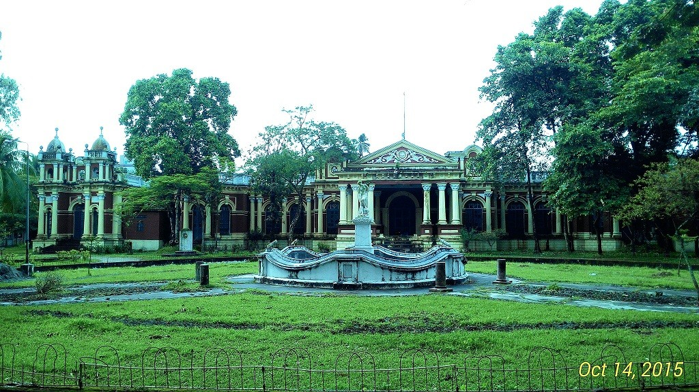
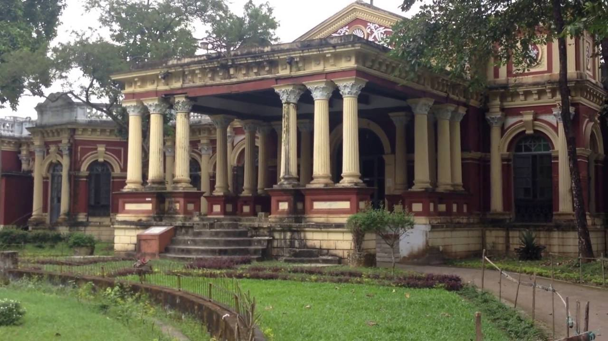
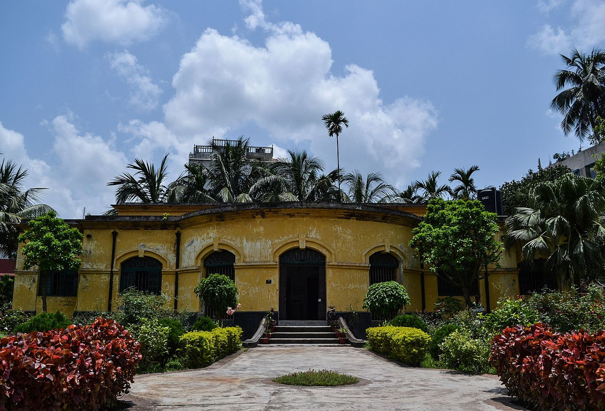
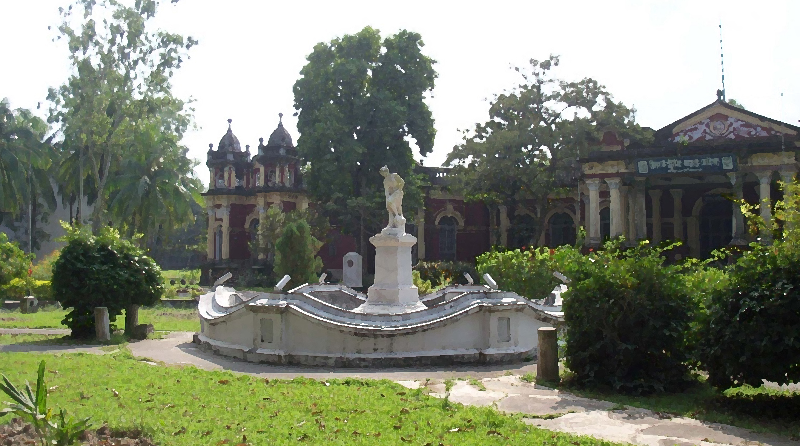

1 / 6

Gouripur Palace
2 / 6

Muktagacha Palace
3 / 6

Shoshi lodge
4 / 6

Jurjakanta Palace
5 / 6

Mymensingh Museum
Gouripur palace:
Gouripur Lodge is a signature of golden Zamindari period and an old edifice in Mymensingh town. This archaic building is located near the main town. One can go there using rickshaw easily. It is very near to the Boro Bazar. Though, the purpose and time of establishment is not known to all; however, it can be discovered if further research is conducted there. It was made using iron, tin and wood. Structure of the building is similar to the Zamindar Mansion of that period. History tells that it was built by Brozendra Kishor Ray Chowdhury. Now it is being used as Sonali Bank Corporate office of Mymensingh city. Government officers and few of their subordinates are currently living at that mansion. It has around 20 rooms inside. Anyone can visit there at anytime. You may not have the permission to enter inside, but easily can get access to the mansion premises. t is located near Mymensingh Zero Point and Boro Bazar area. You may Just ask to the local people for Sonali Bank and they will direct you to it.
Muktagacha Palace:
Mymensingh city is one of the old cities in Bangladesh. Historically & archaeologically it is very important from tourism point of views. Once a traveler wants to travel in this district, he/she will find several places to visit. Muktagacha Zamindar House is one of those. This old palace is located at the heart of the MuktagachaUpazila, 16km west to the Sadar Upazila. Previously the name of Muktagacha was Binodbari .It is believed that the Zamindars actually came from the Natore or Bogra of our North Bengal. When the first ruler named Srikrishna Acharya arrived here, a local inhabitant named Muktaram Kormokar welcomed them with a large lamp stand that was made from brass. In that portion of our country, people call a lamp stand as Gachha. This gratitude pleased the Zamindar and they have renamed the area as Muktagacha using that inhabitant’s name and the lamp stand’s local name.
Mymensingh Museum:
Mymensingh Museum (Mymensingh Jadughar) is located at the bagan bari("garden house") of zamindar Madan Babu at 17 Amrita Babu Road, Mymensingh, Bangladesh. The museum, which began as an important regional institution for preservation of locally collected historical evidence, lacks proper preservation. Its objective is to preserve the rare and unique relics of local architecture, sculpture, metal works, utensils, handwritten scripts on paper and leaf, and commercial products. Collected from the palaces of Mymensingh District zamindars, the museum's initial collection included 214 articles. They are housed in three rooms within the museum. The museum was established in 1969 at the initiative of the-then Deputy Commissioner of Mymensingh.Initially run by the Mymensingh Municipality, the Department of Archaeology, Cultural Affairs Ministry took charge of the museum in 1989.By 1995, it was enlisted in the gazette. The collection includes manuscripts and coins, though many are not on display due to insufficient showcase space. A peacock mummy comes from Mymensingh Medical College. Bamboo and cane items, preserved birds, photographs and pottery were damaged during a renovation in 1999–2001. Several articles were collected from zamindar palaces. The Muktagacha zamindar palace contribution includes a stone flower vase, a compass, antique clocks, Bakharee (an ornament), pottery, weaving machines, ornamental flower tub stands, candle stands, iron shelves and sports items; statuary and sculptures include those of Saraswati, Vishnu, and a dragon; natural history items include a tiger head, two deer heads, and the head of a wild bull.[2] Elephant heads, a sofa set, Italian statues, and a huge shade used during hunting come from the Gouripur zamindar palace. A rhinoceros hide and a table with a marble stone top were acquired from The Atharabari zamindar palace.The museum contains many paintings of rural Bengal.
Shoshi Lodge:
Shoshi Lodge is located at the center of Mymensingh city which is also known as the Residential Palace of Moharaja Shoshi Kanto Acharya. This palace is very close to the river Brahmaputra which is being used as Women Teachers Training College from the year 1952. According to the history, most of the rulers from Zamindar family have adopted babies in different era and those adopted child ruled the area later. For example Gourikanta was adopted by Roghunondon. Son of Gourikanta was Shashikanta and his wife adopted Surjokanta as she was childless. Later, Surjokanto became the prominent Zamindar of Mymensingh district. People used to call him as Moharaja. Moharaja Surjokanto Acharya was the Zamindar in Mymensingh region for long 41 years. During the reign of his Zamindari he did so many work for social welfare and made a remarkable change in infrastructural development. He started to build an unique two storied building on an area of nine acre at the end of nineteenth century. Childless Zamindar Surjokanto named after this building in the name of his adopted son Shoshi Kanto Acharya. After completion of construction this building was extensively damaged by a destructive earth quake on the year 1897. Zamindar Surjokanto was immensely worried at this great loss.